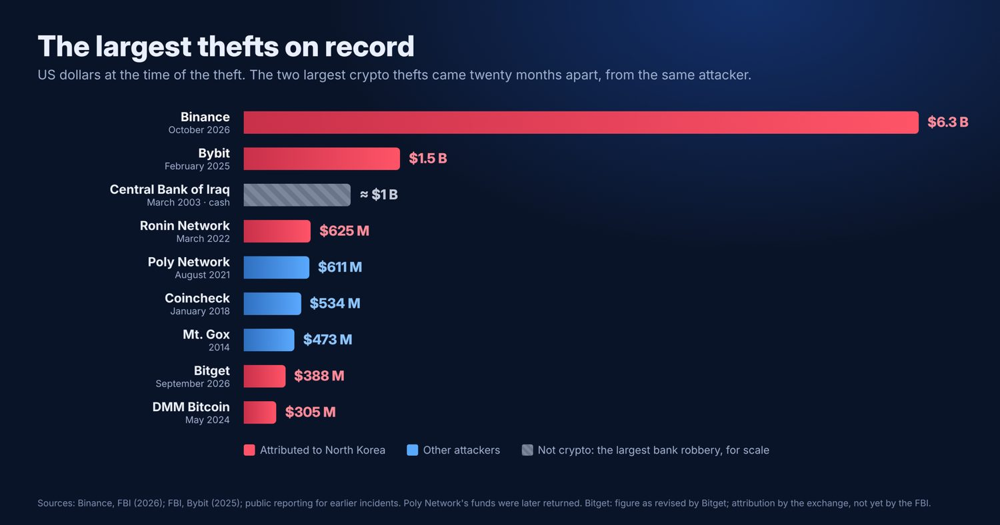

- In February 2025, $1.5 billion left Bybit, one of the world’s largest crypto exchanges, while every signer followed procedure.
- The first explanation — careless signers — was wrong: they read one transaction and signed another.
- Finding out how means leaving Bybit entirely.
The ceremony
Start with the room, because the room is the whole mystery.
On February 21, 2025, a handful of senior people at Bybit — one of the largest cryptocurrency exchanges in the world — sat down to move money. Not unusual money for them: a routine sweep from one of the exchange’s Ethereum cold wallets, the deep-storage tier kept offline precisely because it holds the most, into a working wallet used for daily business. They had done this many times. There was a procedure.
The procedure was good. The wallet was a multi-signature wallet, which means no single person could move anything from it. It took several of them, each approving independently, each on their own dedicated hardware signing device — the kind of small, purpose-built gadget whose entire reason to exist is that it cannot be casually tampered with. The wallet was built on Safe, formerly Gnosis Safe: the most widely used, most heavily audited smart-contract wallet in the entire industry, holding billions of dollars for thousands of organizations. Choosing Safe was not a gamble. It was the conservative, boring, everyone-does-it choice.
Each signer pulled up the transaction. Each looked at the screen — the Safe web app, open in a browser, showing the transaction in plain language. Each saw a normal transfer: the right destination, the right amount, the familiar interface, the address bar showing the real Safe web address. Each then approved it on a dedicated hardware device, which has a small screen of its own. Each checked what they had been trained to check. Each was satisfied. Each approved, on a device held in their own hand.
Within minutes, roughly 401,000 ETH and a large stETH position — about $1.5 billion — were gone. Swept to an address belonging to someone none of them had ever heard of, and from there, almost immediately, scattering.
When it happened, it was the largest single theft on record: larger than any bank robbery or gold heist. (Five months later, analysts disclosed an older loss that had never been reported: bitcoin worth about $3.5 billion at the time, taken from the Chinese mining pool LuBian in December 2020.) Among thefts made public when they happened, Bybit’s stayed the largest for twenty months, until the same attacker took more than four times as much from Binance. That theft is the subject of Part 4.

One figure is worth fixing in place now, because the headline number misleads almost everyone who hears it — the author included, until the records were laid side by side. The theft was real and roughly $1.4–1.5 billion; despite a fast, well-publicized recovery effort, only single-digit percentages were ever frozen, and the bulk was laundered into Bitcoin within days. What was not lost was the customers’ money — and the reason is a thread worth holding onto, because it runs through all four parts of this story: customer balances came through intact not because the funds were recovered, but because a solvent company chose to absorb the loss. The theft was enormous. The customer loss was near zero. The distance between those two numbers is a company’s balance sheet — and we will come back, in Part 3, to what happens when there isn’t one.
The sealed room
Here is the thing that should stop you, the thing nearly every account of this got backwards: the people in that room did nothing wrong.
They followed the procedure. They used the secure hardware. They looked at the screen and approved what it showed them. By every standard the industry had taught them, they were careful. And $1.5 billion left anyway.
This is a locked-room mystery in the oldest sense. The vault was sealed. The guards were awake, trained, and competent. Every key turned, in the right order, by the right hands. Nothing was forced, nothing was picked, no alarm sounded. And the gold still vanished — not from a weakness anyone in the room could see, touch, or test.
The temptation, with a mystery like this, is to skip to the end. We already know who did it; that part was never really hidden, and we will name them in Part 2. But “who took it” is the least interesting question here, the way the identity of the burglar is the least interesting thing about a good locked-room story. The interesting question — the one a real detective is forced to ask when the door was bolted from the inside — is the harder one:
How was the room open the entire time, and why could no one standing in it tell?
The convenient suspects
The first answers were the comfortable ones, and comfort is always the detective’s enemy.
Within a day, the consensus had formed: the signers were careless. They had blind-signed — rubber-stamped a transaction they didn’t really understand. It fit a familiar story shape, the one we reach for whenever a great deal of money disappears: somebody got sloppy. An exchange got lazy with its security. Human error, preventable, theirs.
It is worth being honest about why that story is so attractive, because the attraction is itself the trap. If the signers were careless, then you — careful, attentive, not the sort to get lazy with a billion dollars — are safe. The failure belongs to them. You can file it under don’t be careless and sleep soundly.
The forensic record does not let you sleep. In the weeks after the heist, a small army of independent security firms took the attack apart — Sygnia and Verichains, retained to investigate; Hacken, NCC Group, Check Point, SlowMist and others publishing their own reconstructions — and Bybit released its own findings. They disagreed about emphasis, and they disagreed, pointedly, about blame. They did not disagree about the mechanism. And the mechanism exonerates the room.
Because the signers were not careless people who failed to read a transaction. They were careful people who read a transaction — and signed a different one. The thing they approved on their screens and the thing their devices actually committed to were not the same thing, and the gap between them had been engineered, deliberately, with patience, by someone who was never anywhere near that room.
Which means the careless-signer story isn’t just wrong. It is the cover the attack was designed to hide behind — the comfortable explanation left lying around precisely so the rest of us would pick it up and stop looking.
So we have to keep looking. And to find where the room was actually breached, you have to do the one thing every account that blamed the signers refused to do.
You have to leave the room — walk out of Bybit entirely, and follow the trail backward into the build pipeline of a company most of the victims had never thought about.
That trail, and what waited at the end of it, is Part 2: The Trail Out the Door.
This is Part 1 of a four-part reconstruction. Parts 1 to 3 cover the February 2025 Bybit heist. Part 2 follows the forensic trail to the true mechanism — and to what the signers actually saw. Part 3, “No Backstop,” asks why crypto, unlike the banking system it increasingly resembles, has almost no way to make a victim whole — and what would have to change. Part 4, “Fifty Signatures,” reconstructs the October 2026 Binance theft by the same attacker.
This series is published by a team building signing and coordination architecture of the kind discussed in Part 3; it references its own prototype work there, by way of illustration. The reconstruction stands on the public record. Specific figures and the attack timeline are drawn from public forensic reports (Bybit, Safe, Mandiant, Sygnia, Verichains, Hacken, NCC Group, Check Point, SlowMist, Elastic Security Labs and others) and should be re-verified against primary sources before publication.